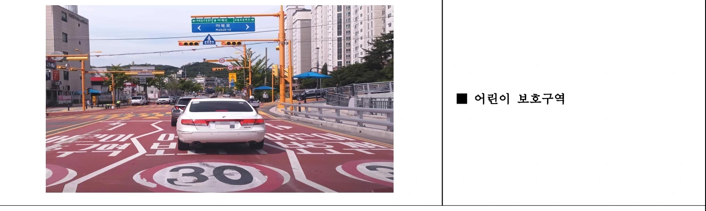

758. Hai câu nào là giải thích đúng về biển báo an toàn giao thông trong tình huống sau?

- ①Số 30 ký hiệu trên mặt đường mang ý nghĩa là giới hạn tốc độ tối đa trên đường là 30 km/giờ.
- ②Vạch sang đường dành cho người đi bộ chỉ được ký hiệu bằng màu trắng, vì vậy nếu ký hiệu bằng màu vàng là sai.
- ③Vạch kẻ liền màu trắng hình dích dắc báo hiệu cần chạy chậm và có thể chuyển làn đường ở đoạn đường này.
- ④Biển báo hướng dẫn gắn với đèn tín hiệu giao thông dành cho xe có ý nghĩa là có vạch sang đường dành cho người đi bộ.
- ⑤Nhựa đường màu đỏ chỉ được sử dụng cho khu vực bảo vệ trẻ em.
Xem đáp án
Đáp án
① Số 30 ký hiệu trên mặt đường mang ý nghĩa là giới hạn tốc độ tối đa trên đường là 30 km/giờ.
④ Biển báo hướng dẫn gắn với đèn tín hiệu giao thông dành cho xe có ý nghĩa là có vạch sang đường dành cho người đi bộ.
Căn cứ
30 trên mặt đường biểu thị giới hạn tốc độ tối đa, lối qua đường có thể được đánh dấu màu vàng trong khu vực bảo vệ trẻ em, vạch liền màu trắng hình zigzag biểu thị cả hạn chế chuyển hướng và biển báo giảm tốc độ, biển báo dành cho người đi bộ qua đường hiển thị trên tín hiệu xe cho biết phía trước có lối qua đường dành cho người đi bộ và nhựa đường màu đỏ không chỉ được sử dụng trong khu vực bảo vệ trẻ em mà còn ở khu bảo vệ người cao tuổi và khu bảo vệ người khuyết tật.
Phần căn cứ là bản dịch máy để tham khảo.